Garis warna = penanda mata kuliah di aplikasi (cyan, amber, ungu). Bentuk S = alur belajar.
Tiga baris agenda yang tersambung membentuk S; garis warna mata kuliah menandai awal dan akhir alur.
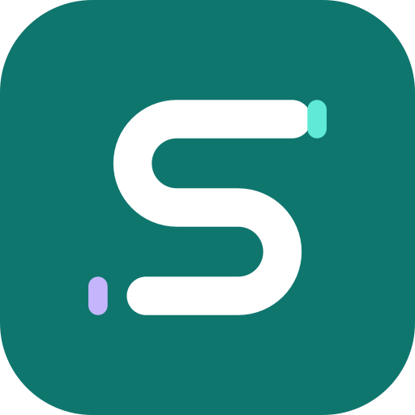
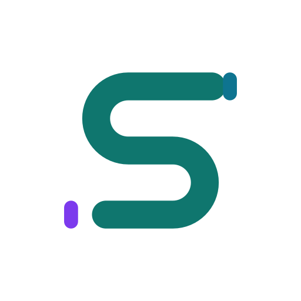
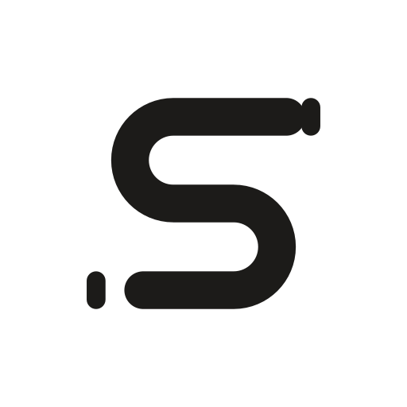
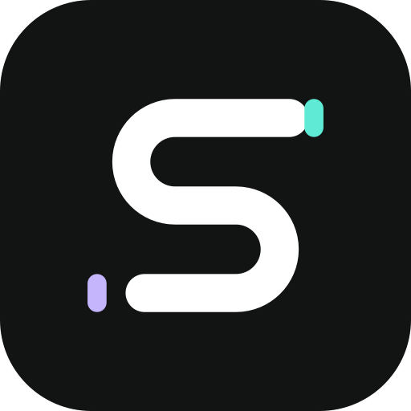
Ubin S dengan garis warna mata kuliah di sisi rata setiap ubin, seperti garis di baris tugas aplikasi.
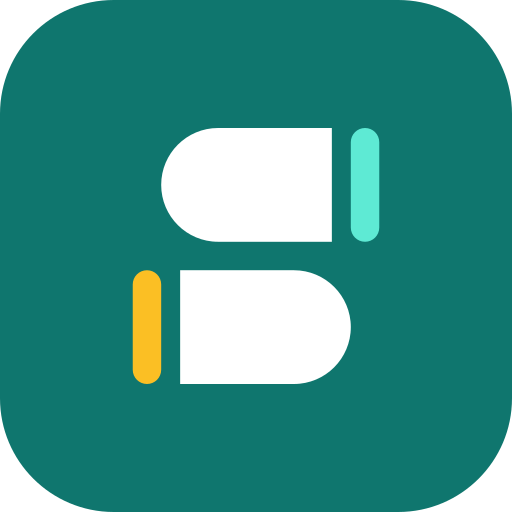
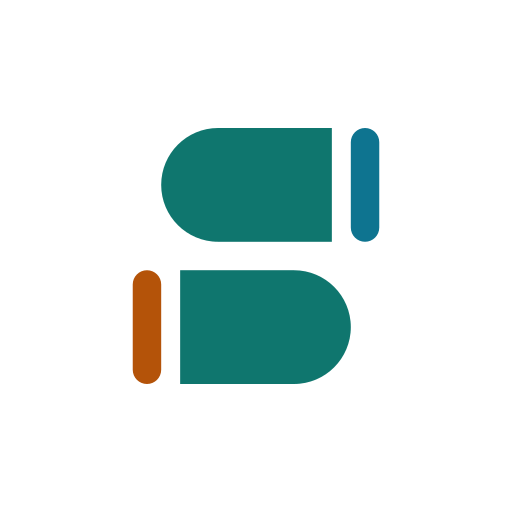
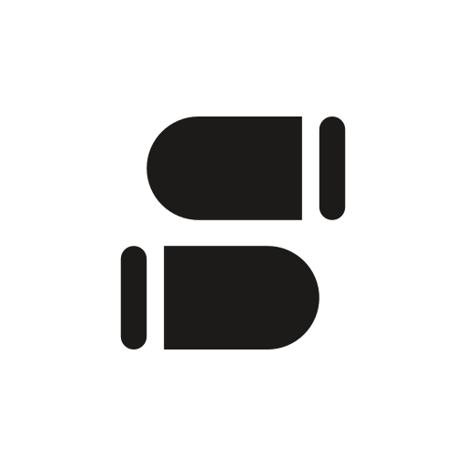
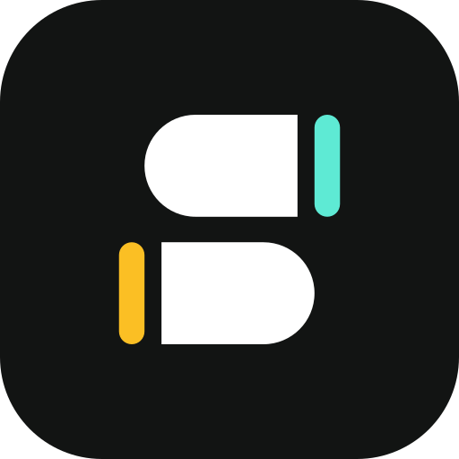
Tiga baris-ubin dengan ujung bulat bergantian sehingga membentuk S; tiap baris punya garis warna sendiri.
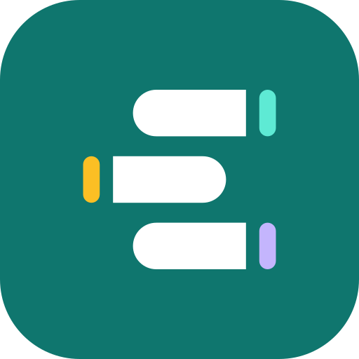
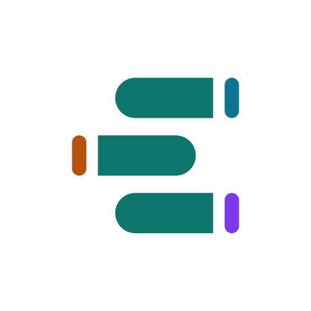
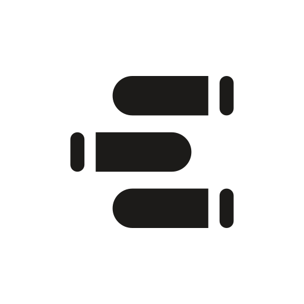
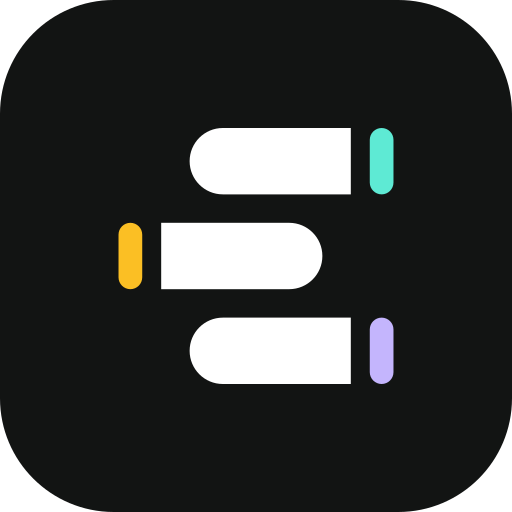